Let  be holomorphic on the annulus
be holomorphic on the annulus
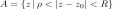
. Then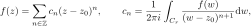
 , where
, where 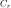
is any circle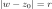
with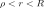
; the coefficients do not depend on and are uniquely determined by .
and are uniquely determined by .
Fix  and choose
and choose
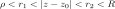
. As in the proof of the integral formula, cutting the region between the two circles into pieces contained in convex subsets of and cancelling
the cuts gives
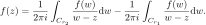
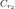
expand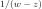
in powers of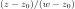
, of modulus less than , as before; on
, as before; on 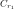
expand instead in powers of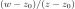
, again of modulus less than,
giving
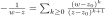
. Both series converge uniformly in on the respective circles, by
the Weierstrass test, so may be integrated term by term; the first gives
the coefficients with
on the respective circles, by
the Weierstrass test, so may be integrated term by term; the first gives
the coefficients with 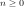
and the second those with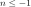
.
Independence of follows because the integrand is holomorphic in
the annulus, so the same cutting argument equates the integrals over two
circles. Uniqueness: given any such expansion converging locally
uniformly, multiply by
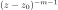
and integrate over ; all terms vanish except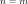
, which contributes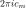
.
Let be holomorphic on a punctured disc
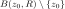
, with Laurent coefficients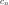
. The singularity at is removable if
is removable if 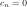
for all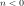
; a pole of order if
if 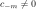
and for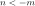
; and essential otherwise. The residue is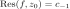
.
The singularity at is removable if and only if is
bounded near , and then extends holomorphically across
. It is a pole of order if and only if
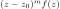
has a removable singularity with non-zero limit, and then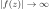
as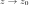
.
If the singularity is removable the series defines a holomorphic
function on the whole disc, which is bounded near . Conversely
suppose
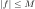
on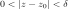
. For and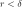
the standard estimate gives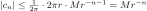
, and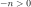
, so letting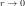
forces .
For a pole of order , the Laurent series of
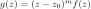
is that of shifted by , so it has
no negative powers and constant term ; conversely such a
 gives back the stated coefficients. Then near ,
gives back the stated coefficients. Then near ,
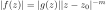
with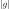
bounded below, so it tends to infinity.
If is an essential singularity, then for every
 the image of the punctured disc
is dense in
the image of the punctured disc
is dense in
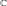
.Suppose not: there are
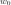
and with
with
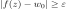
on the punctured disc. Then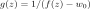
is holomorphic there and bounded by , so by Riemann's theorem it extends holomorphically across
. If
, so by Riemann's theorem it extends holomorphically across
. If  then
then 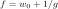
is bounded near and the singularity is removable; if has a zero of order
at , then 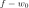
has a pole of order. Either
way the singularity is not essential.
The three cases are exhaustive and the trichotomy is sharp: a singularity is removable, or the function blows up, or it comes arbitrarily close to every complex value in every neighbourhood. Picard's theorem strengthens the last to "takes every value, with at most one exception, infinitely often" – which is not proved here and is the natural next step.